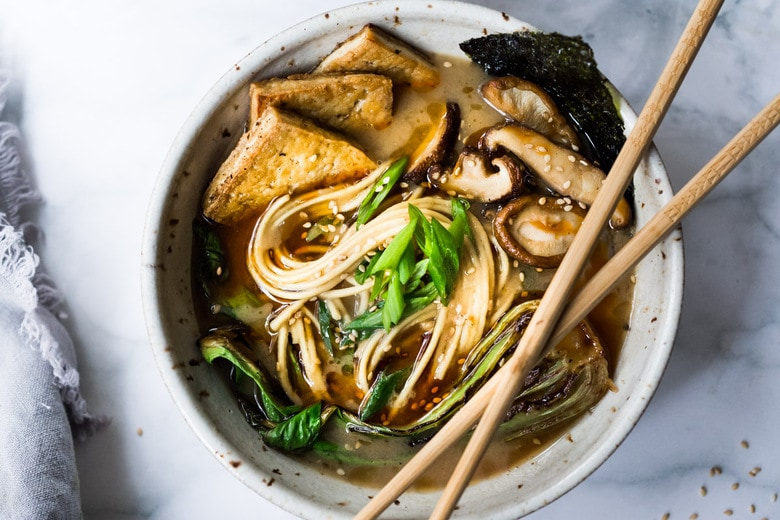
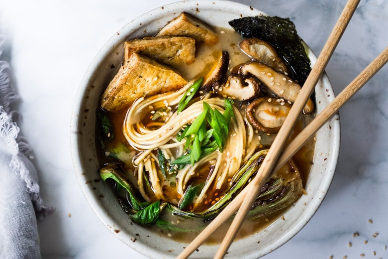
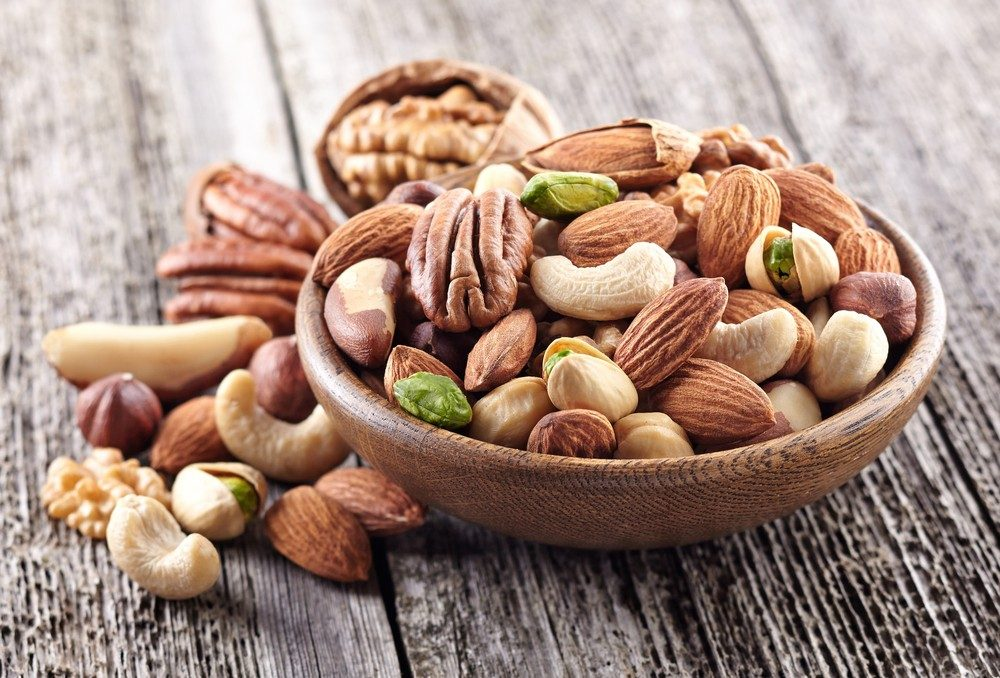
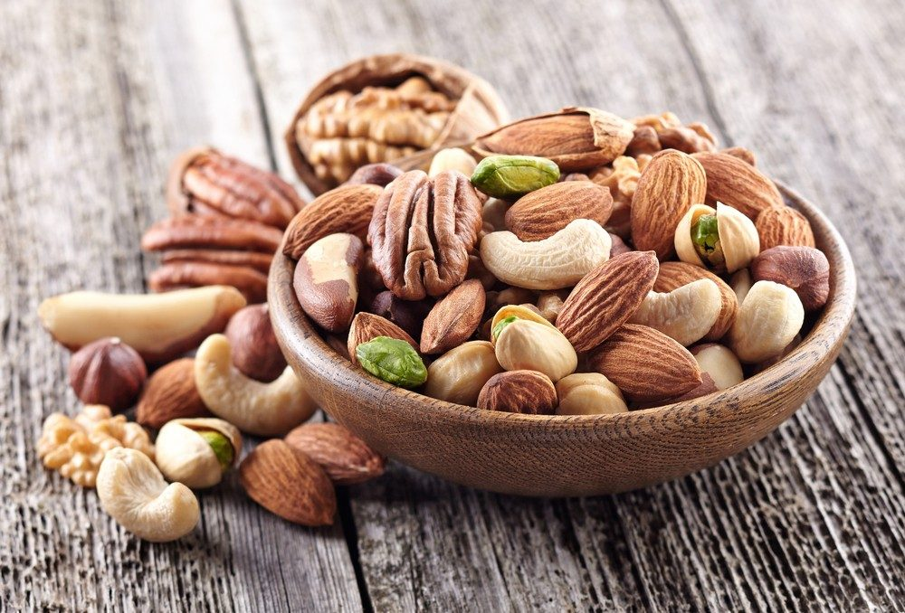

Favorite Foods
Food from all cultures possess a certain amount of appeal but I'll try to condense the list to a reasonable size. First and foremost, I'd like to show my appreciation for nature's forevery varying wonders. Fruits. I couldn't possibly give mention to the enumurable amount of variety when it comes to fruit, but for the sack of the excerise...mango, berries, bananas, oranges, kiwis, melons, persimmons, grapes, oh and lets not forget apples, specifically Pink-Lady apples. I enjoy Italian cuisine, and foods of Asia, like rich and flavorful ramen and savory and spicy curry. Nuts!. I'm nuts about nuts.
 

 

Achievements
Progress in this course (100%)Progress in specialization capstone ( 20% )
Progress in life goals ( 90% )
More About Me
My career goals
I'm currently pursuing a career in Full Stack web development.
I'm also very much interested in Full Stack application development.